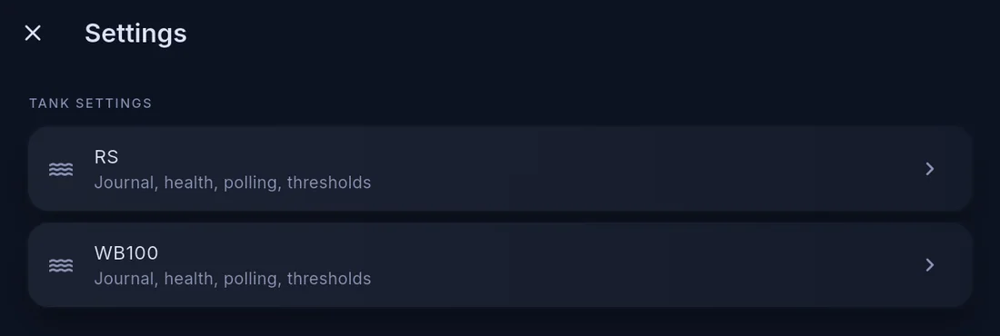
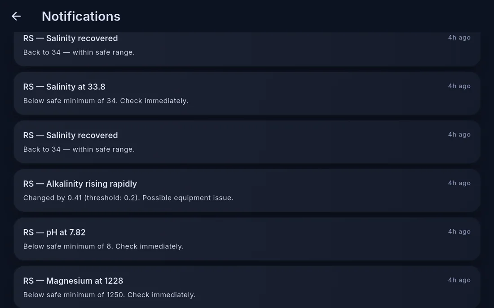
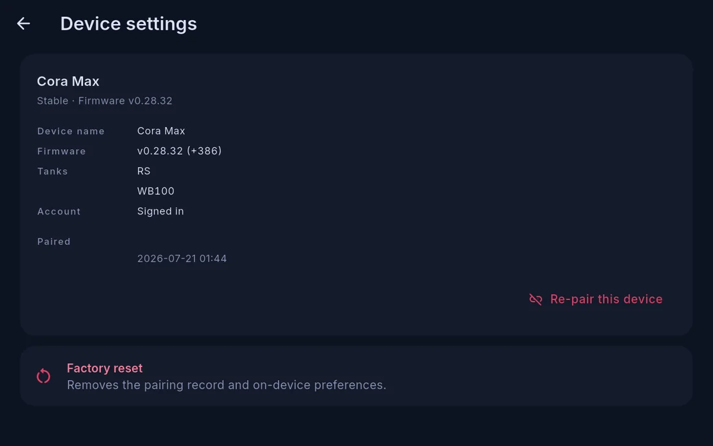
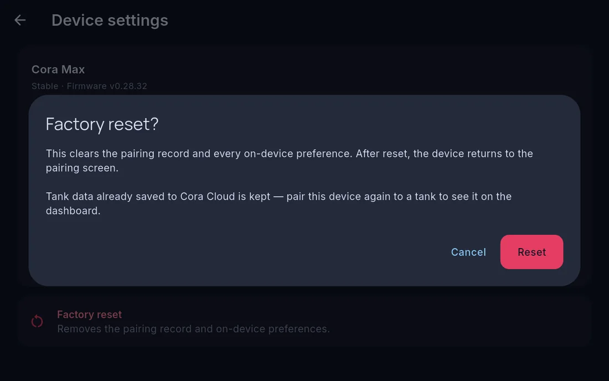

Cora Max settings
Open settings with the gear at the far right of the top bar.

Tank settings
One entry per tank this screen shows, each opening that tank's journal, maintenance, alerts, livestock, reports and activity. Thresholds set here are the same ranges you set on your phone — change one anywhere and it applies everywhere. See Alerts and thresholds.
Devices
Everything this screen can see and how each one is doing. Cora Max sees the same devices as your phone. Diagnostics for the unit itself are not here — they are under Firmware → Device health & controls.
You can check state here, but adding and configuring equipment is easier in Cora Mobile — see Adding, editing and removing devices.
Notification history
The account-wide inbox — every briefing, alarm and account notice across your whole system, including anything your phone missed.

Recoveries are recorded as well as alarms, so a parameter that went out of range and came back reads as a closed pair rather than an unexplained warning.
Settings for this screen
| Group | Covers |
|---|---|
| Firmware | Update now or snooze, the update channel and schedule, and device health |
| Network | Wi-Fi, an internet check, switching and forgetting networks, auto-join, and venue sign-in for captive portals |
| Audio | Output — internal speaker, 3.5 mm or Bluetooth |
| Voice | Wake-word listening on or off, and which device answers for the household |
| Alerts | Audible chime with its volume, and spoken alerts |
| Display | Brightness, idle behaviour, night settings |
| Child lock | Blocks actuation while leaving questions and readings available |
| Pairing | Which account this screen belongs to, re-pairing, and factory reset |
Pairing, re-pairing and factory reset
Device settings shows what this screen is currently bound to: its firmware version, which tanks it displays, whether an account is signed in, and when it was paired.

Re-pair this device moves the screen to a different account or tank set without clearing its preferences.
Factory reset goes further, and the confirmation says exactly how far.

Which tanks this screen shows
A Cora Max can show one tank or several, and you switch between them from the top bar. The set itself is chosen from your phone, under Devices → your Cora Max → assigned tanks — not from this screen.
Updates
Cora Max keeps itself up to date. New versions download in the background and install themselves, and you are told what changed. If a version has just arrived, the prompt appears on screen. There is nothing you need to do to stay current. See Keeping Cora Max updated.
Written for Cora Max 0.28.37 and Cora Mobile 0.5.55.
Still stuck? Email cora@coraiq.tech and we'll help.